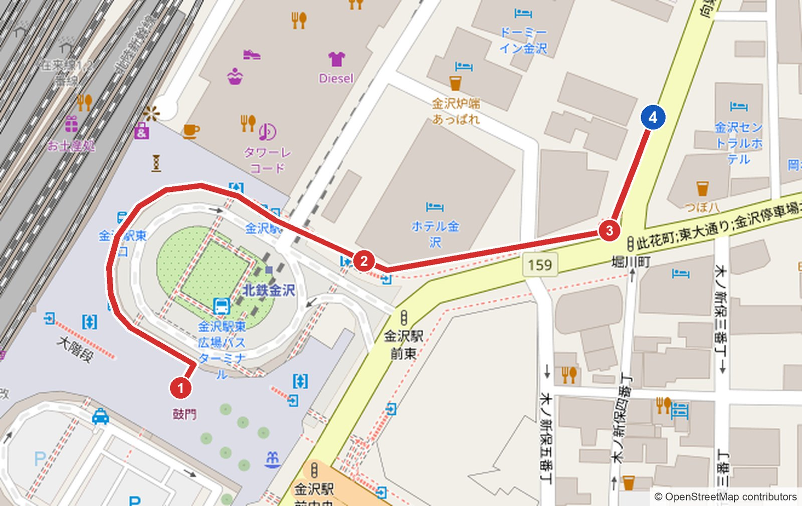
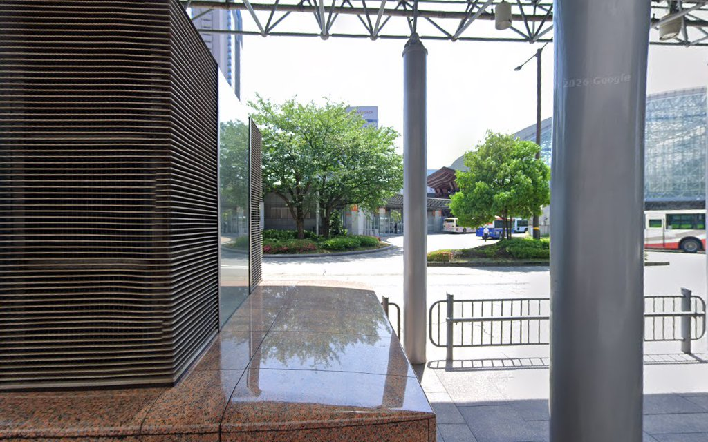
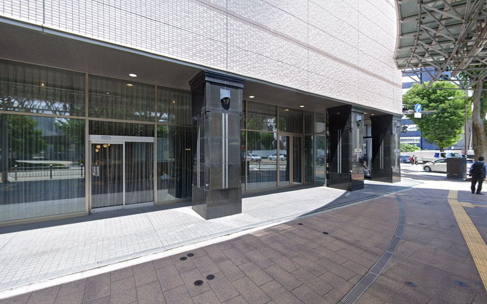
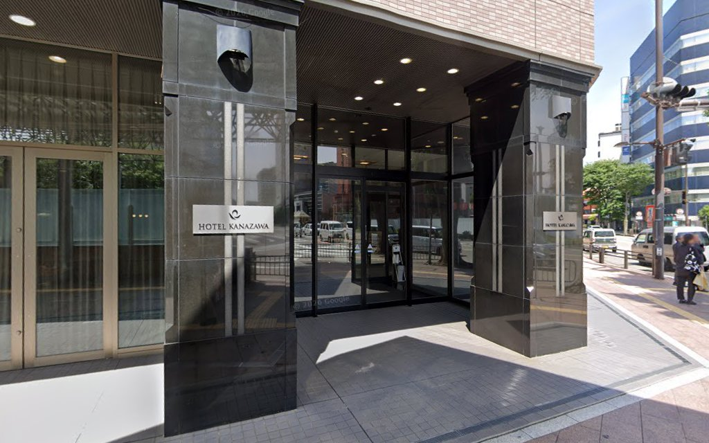
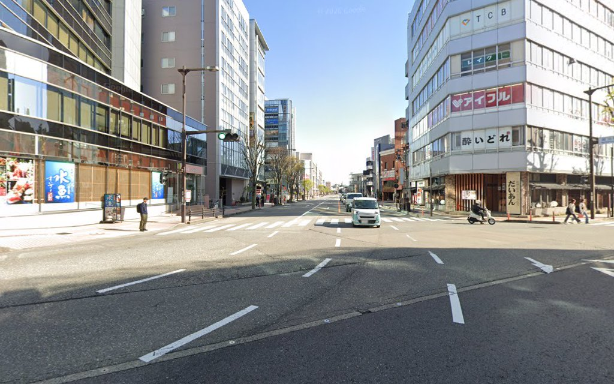
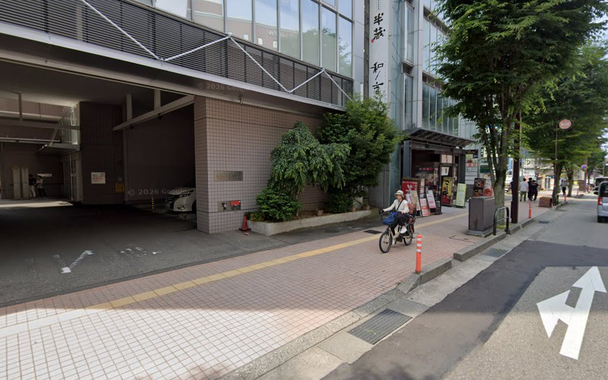
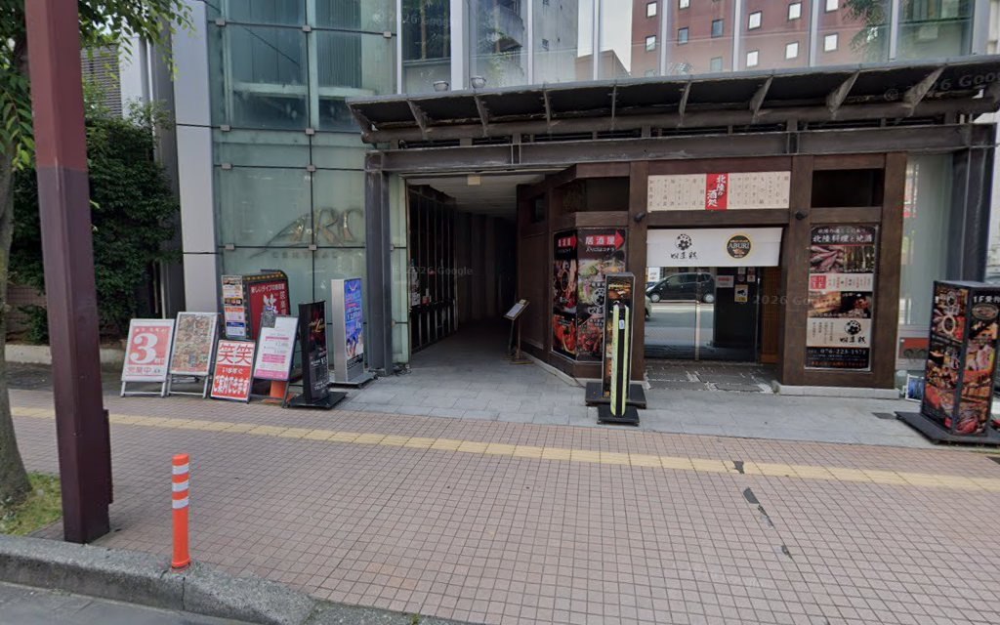

11/22（日）19:15〜 懇親会会場
兼六園口（東口）の鼓門から、バスロータリー沿いの屋根つき歩道でホテル金沢の前へ。大通りを少し歩いて、大きな交差点で左折すればすぐです。約350m・徒歩5分ほどです。
ホテル金沢を過ぎてすぐの細い道は曲がらずに渡ります。左折するのは、その先の信号のある大きな交差点（右奥に「アイフル」「TCB」の看板のビル）です。

約190m ／ 3分
鼓門（木の大きな門）をくぐって外に出たら、バスロータリーを右手に見ながら左回りに、屋根つきの歩道を進みます。ロータリーをぐるっと半周すると、正面にホテル金沢（学会会場の一つ）が見えてきます。
遠回りに見えますが、ロータリーの中はバス専用で横切れないため、外周を回ります。距離は最短ルートとほぼ同じです。

約100m ／ 1〜2分
ホテル金沢の正面玄関を左手に見ながら、そのまま大通り（東大通り）沿いを進みます。ホテルの角を過ぎると細い道が1本ありますが、ここは曲がらずに渡ります。


右奥に「アイフル」「TCB」の看板の白いビルが見える交差点です。横断歩道は渡らず、手前の角を左に曲がり、左側の歩道を北へ進みます。

約50m ／ 1分
曲がってから50mほど。左手に看板がずらりと並ぶガラス張りのビル（セントラルアークビル）があります。入口の通路を奥へ進み、3階へ上がってください。


写真は撮影当時のものです。看板やお店の並びは変わっている場合があります。
| 区間 | 距離 | 目安 |
|---|---|---|
| 鼓門 → ホテル金沢の前 | 約190m | 約3分 |
| ホテル金沢 → 堀川町の交差点 | 約100m | 約1〜2分 |
| 左折 → セントラルアークビル | 約50m | 約1分 |
| 合計 | 約350m | 約5分 |
学会会場（石川県立音楽堂・ホテル日航金沢・ANAクラウンプラザホテル金沢など）からは、まず鼓門まで出てください。ホテル金沢の会場から向かう方は、②からスタートです。
11月22日（日）19:15〜21:15
会費 5,000円（コース料理・飲み放題込み）
現地集合です。会費は当日、受付でお支払いください。
写真：Google ストリートビュー（© Google）。地図：© OpenStreetMap contributors。
ルート・距離：Googleマップ、OpenStreetMap の徒歩ルート検索をもとに作成（2026年10月15日時点）。
写真は撮影当時のもので、看板や工事の状況が現在と異なる場合があります。